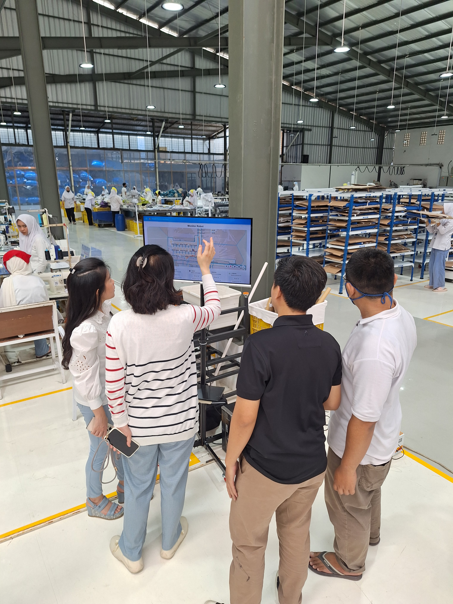
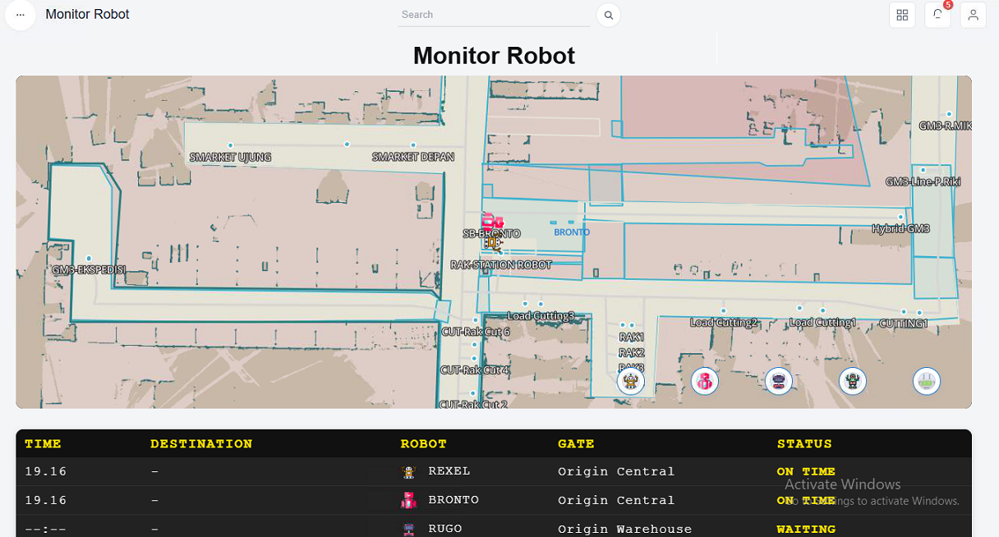

Led the second-stage development of the factory’s Autonomous Mobile Robot (AMR) ecosystem by building a custom fleet management platform for real-time monitoring, operational analytics, and integration with factory workflows.
Robot Monitoring
Robot Integration
Telegram Dispatch
After gaining access to the robot SDK and API, I led the second-stage development of the factory’s AMR ecosystem. The project focused on building a custom fleet management dashboard that enabled real-time robot monitoring, operational analytics, and system integration with existing factory workflows.
This project represented the transition from robot deployment to full robotics system integration. By utilizing the robot SDK and APIs, the team transformed standalone autonomous robots into a connected fleet that could be monitored, managed, and integrated with factory operations through a custom-built platform.

Shows that robots can be controlled and monitored.

The monitoring dashboard results.